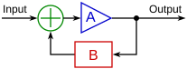

01. Introduction
Engineering (from Latin ingenium: cleverness) is the creative application of scientific principles to design, build, operate, and predict the behavior of structures, machines, processes, or systems in a safe and efficient manner to achieve a specific objective.
Technology (from ancient Greek τέχνη + λογία = techne + logia: science + art, skill) is the application of techniques, skills, methods, and processes to produce goods and services or achieve specific objectives.
Data, Information, Knowledge
Data (plural, from Latin datum - something given) are raw facts, figures, or symbols without context or interpretation. They represent unprocessed observations and have little meaning on their own. Information is data that has been processed, organized, or structured in a way that gives it context and meaning. Knowledge is the understanding, insight, and experience gained from interpreting and applying information.
Note
Data: "30," "32," "31" just raw numbers with no context. Information: "The temperatures recorded over three days were 30°C, 32°C, and 31°C." - now the data has context and meaning. Knowledge: "Since temperatures above 30°C increase water evaporation, watering plants in the early morning is more effective." - applying the information to guide action.
Context is the background, circumstances, or setting that gives meaning to data, information, or events. It allows us to interpret and understand facts correctly by showing how they relate to one another and to the situation in which they occur.
Note
Numbers like 1, 4, 9, 16, and 25 by themselves are just data. Without context, our experience may lead us to assume they are the squares of numbers from 1 to 5. But such a quick pattern recognition may mislead us once the context is given that these numbers represent the quantity of ice cream sold in a small grocery store on five different days. Context gives data its true significance and turns it into meaningful information.
System
Cybernetics is the study of control, communication, and feedback in systems, a field developed by Norbert Wiener. During WWII, Wiener worked on predicting the future position of enemy aircraft: he realized that the gun–pilot system forms a feedback system, constantly correcting actions based on error and delay rather than following a fixed plan. This insight led him to extend control theory beyond machines to living systems, emphasizing self-regulation and adaptation under uncertainty. This way of thinking later influenced artificial intelligence and deep learning, where feedback from errors is used to adjust internal parameters and improve performance.
Tip
We will discuss artificial intelligence in our future weeks. See the lecture notes dedicated to the topic.
System is a set of interrelated components working together toward a common goal by accepting inputs, processing them, and producing outputs. Control system is a system that continuously monitors outputs and uses feedback to adjust inputs or processes, maintaining the system's desired performance and stability.

Note
In a home heating system, the desired room temperature is the input, the furnace heating the air is the process, and the warm air circulating through the house is the output. Feedback comes from a thermostat, which senses the actual temperature and switches the furnace on or off to keep the room at the set temperature.
- Input. The resources (data, materials, or energy) that enter the system.
- Process. The transformation mechanism that converts input into output.
- Output. The result produced by the system.
- Feedback. Information from the output that is sent back to the system to influence future inputs or the process itself.
Note
In the mid-19th century, several suspension bridges across Europe failed due to poor system design - weak materials and unpredictable environmental conditions. When John Roebling proposed the Brooklyn Bridge, he applied engineering systems thinking to overcome these failures. Roebling's bridge demonstrates how system components and interactions determine reliability and success. When one subsystem (e.g., faulty cables) failed, built-in redundancies maintained the system's stability.
Information system is a set of interrelated components that collect, process, store, disseminate data and information, and provide a feedback mechanism to monitor and control its operation to make sure it continues to meet its goals and objectives.
Note
A library information system records books (input), organizes and catalogs them (process), provides search results for users (output), and updates records based on borrowing activity (feedback).
Computer-Based Information System is a single set of
- hardware,
- software,
- databases,
- telecommunications,
- people, and
- procedures
that are configured to collect, manipulate, store, and process data into information.
Note
An online banking system takes transaction requests as input, processes them through secure software, and provides account balances or confirmations as output. Feedback such as error alerts or user actions improves future transactions and system reliability.